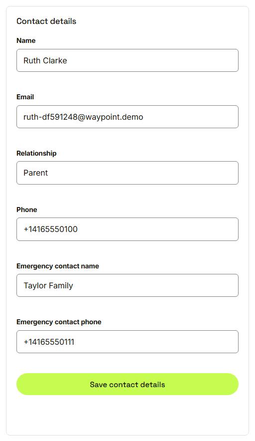
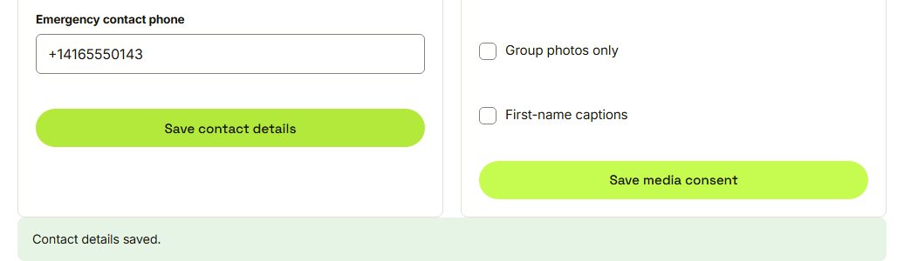
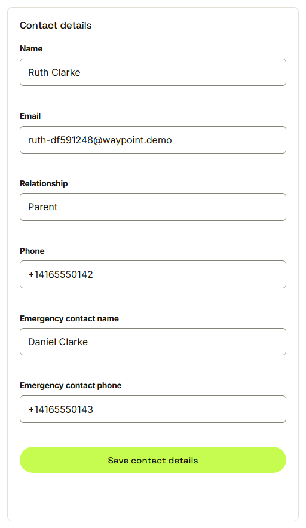

Waypoint · Video 060
Keeping contact details up to date
Six fields, one save button
Contact details

Six fields, already filled in
Saved

Contact details saved
Still there after a reload

The change is stored by Waypoint
Things to remember
Edit your own details in one place
Saving shows a confirmation
The change survives a reload
Nobody else's details can be changed here